SA01 — Apache Kafka 10 Minute Me — Messaging Ka Backbone?
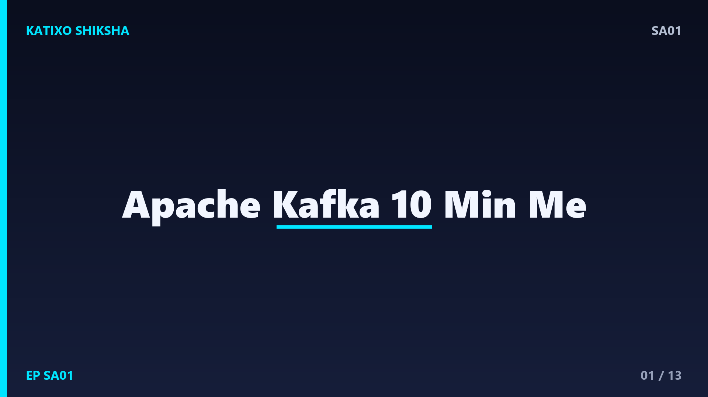
Slide 1दोस्तों, सोचिए Flipkart पर Big Billion Day चल रहा है, हर second लाखों orders आ रहे हैं, payment हो रहे हैं, notifications जा रहे हैं। अब अगर हर service सीधे एक-दूसरे को call करे तो पूरा system क्रैश हो जाएगा। यहीं काम आता है Apache Kafka. Interviews में system design का ये सबसे favourite topic है। आज Katixo KhojLab की इस episode में हम सिर्फ़ 10 minute में, साफ़ Hinglish में समझेंगे — Kafka है क्या, कैसे काम करता है, और इसे कब use करना चाहिए। चलिए शुरू करते हैं।
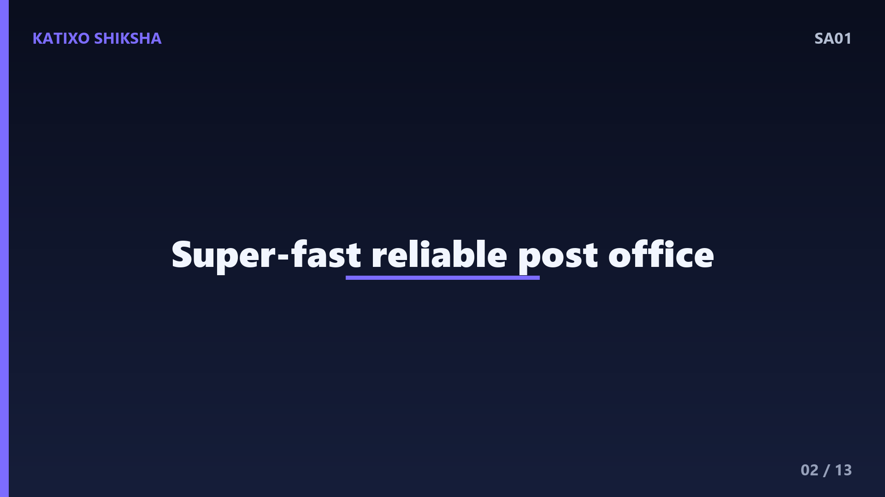
Slide 2सबसे पहले — Kafka है क्या? ये एक distributed event streaming platform है, यानी एक ऐसा system जिसमें data को messages या events की तरह भेजा और पढ़ा जाता है। इसे LinkedIn ने बनाया था और अब ये Apache के under open source है। आसान भाषा में Kafka एक super-fast, reliable post office है। एक service message डालती है, दूसरी service उसे बाद में अपने हिसाब से उठा लेती है। दोनों को एक-दूसरे का इंतज़ार नहीं करना पड़ता। इसी को asynchronous communication कहते हैं।
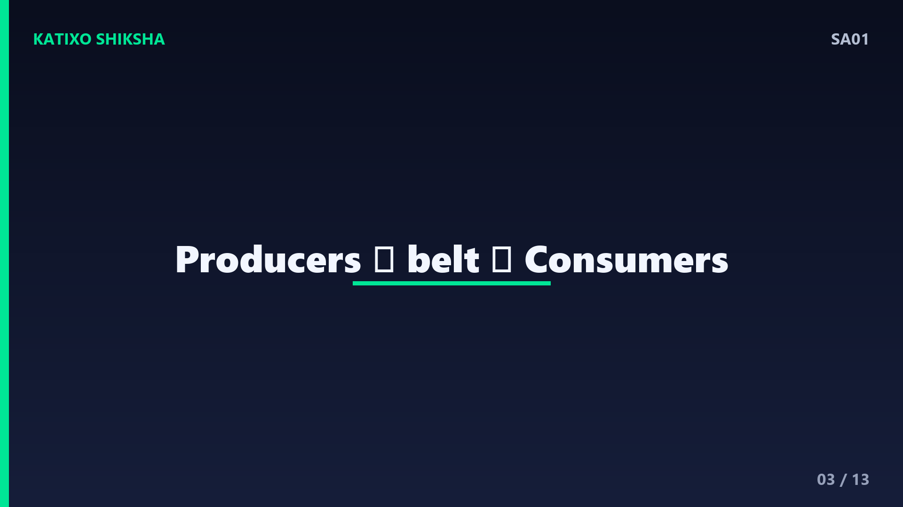
Slide 3इसे एक analogy से समझते हैं। मान लो एक busy restaurant है। Customers यानी producers अपने orders एक conveyor belt पर रखते जाते हैं। Kitchen यानी consumers उस belt से order उठाकर बनाते जाते हैं, अपनी speed से। अगर kitchen थोड़ा slow है, तो भी orders belt पर सुरक्षित पड़े रहते हैं, खोते नहीं। Kafka बिल्कुल यही belt है — एक ऐसा buffer जो producers और consumers को decouple कर देता है, ताकि एक के slow होने से दूसरा रुके नहीं।
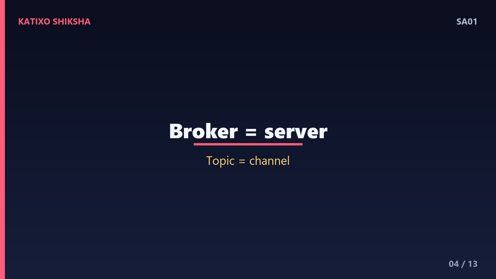
Slide 4अब Kafka के main components समझते हैं। पहला है Broker — ये Kafka का server है जो messages store करता है। कई brokers मिलकर एक cluster बनाते हैं। दूसरा है Topic — ये एक category या channel है, जैसे orders topic या payments topic. Producer एक specific topic में message भेजता है, और consumer उसी topic से पढ़ता है। तो याद रखिए — broker server है, और topic वो नाम है जिसके under messages organize होते हैं।
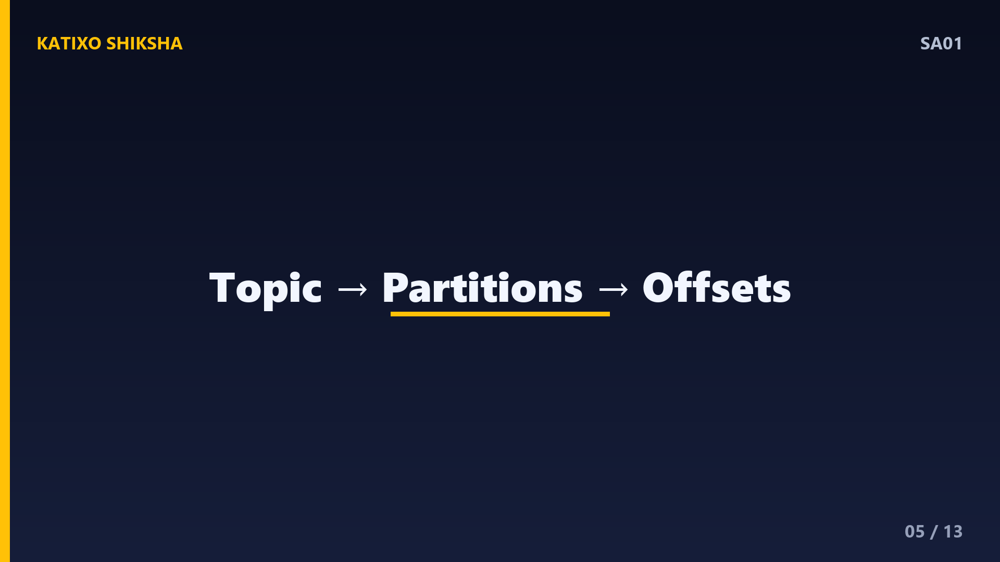
Slide 5अब आता है Kafka का दिल — Partitions. हर topic को छोटे-छोटे टुकड़ों में बाँटा जाता है, जिन्हें partitions कहते हैं। हर partition एक ordered, append-only log है — मतलब messages एक के बाद एक जुड़ते जाते हैं और हर message को एक number मिलता है जिसे offset कहते हैं। Partitions अलग-अलग brokers पर फैले होते हैं, इसी वजह से Kafka इतना scalable है। जितने ज़्यादा partitions, उतनी ज़्यादा parallel processing. ये scalability ही Kafka की सबसे बड़ी ताकत है।
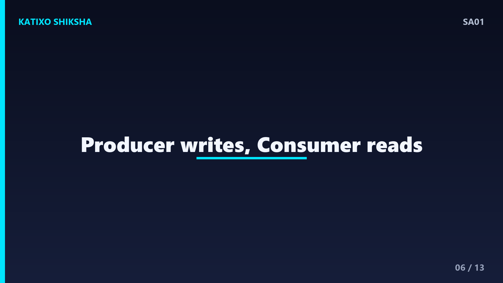
Slide 6अब Producers और Consumers की भूमिका साफ़ करते हैं। Producer वो application है जो data Kafka में लिखती है — जैसे order service जो हर नए order को orders topic में भेजती है। Producer ये भी तय कर सकती है कि message किस partition में जाए, अक्सर एक key के आधार पर — जैसे एक ही customer के सारे orders एक ही partition में। Consumer वो application है जो topic से data पढ़ती है — जैसे email service जो हर order पढ़कर confirmation भेजती है।
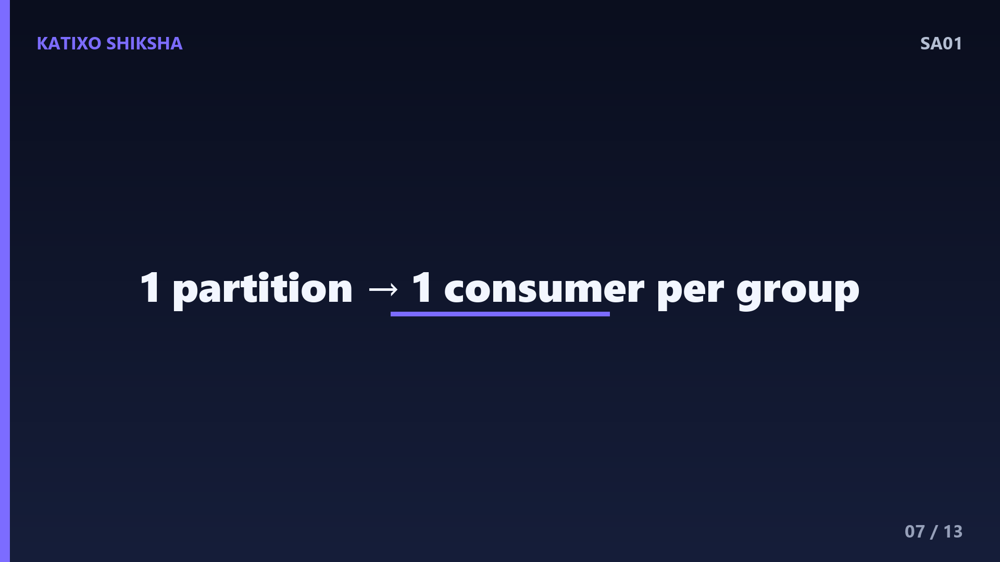
Slide 7अब एक बहुत important concept — Consumer Groups. कई consumers मिलकर एक group बना सकते हैं। नियम simple है — एक topic का हर partition, उस group के अंदर सिर्फ़ एक ही consumer को मिलता है। मान लो एक topic में 4 partitions हैं और group में 4 consumers, तो हर consumer एक-एक partition संभालेगा, और काम 4 गुना तेज़ होगा। यही horizontal scaling है। और मज़े की बात — अलग-अलग consumer groups एक ही topic को independently पढ़ सकते हैं, बिना एक-दूसरे को disturb किए।
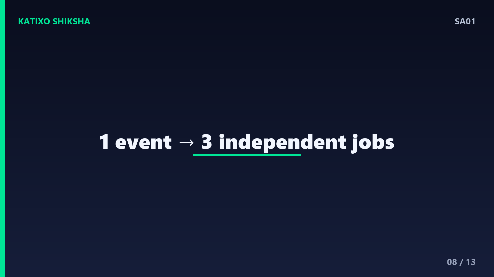
Slide 8अब पूरा data flow एक concrete example से जोड़ते हैं। एक customer order place करता है। Order service यानी producer उस event को orders topic में लिखती है, जो किसी एक partition में offset के साथ store हो जाता है। अब तीन अलग consumer groups उसी event को पढ़ते हैं — एक payment process करता है, दूसरा warehouse को inventory update के लिए notify करता है, तीसरा customer को SMS भेजता है। एक ही event, तीन काम, सब independent. यही Kafka की असली खूबसूरती है।
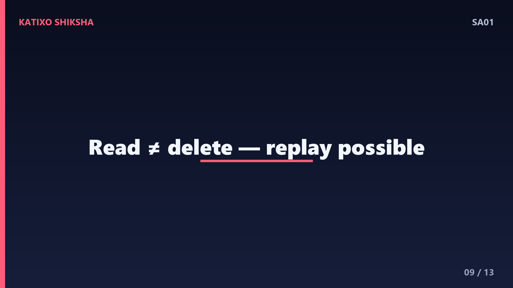
Slide 9अब एक बात जो Kafka को बाकी messaging systems से अलग करती है — Retention. Kafka message पढ़ने के बाद उसे delete नहीं करता। हर message log में एक तय समय तक रहता है, जैसे 7 दिन, या एक size limit तक। मतलब अगर कोई consumer crash हो जाए, तो restart होने पर वो उसी offset से दोबारा पढ़ना शुरू कर सकता है, कुछ खोता नहीं। यही durability और replay की ताकत Kafka को logs, analytics और event sourcing के लिए perfect बनाती है।
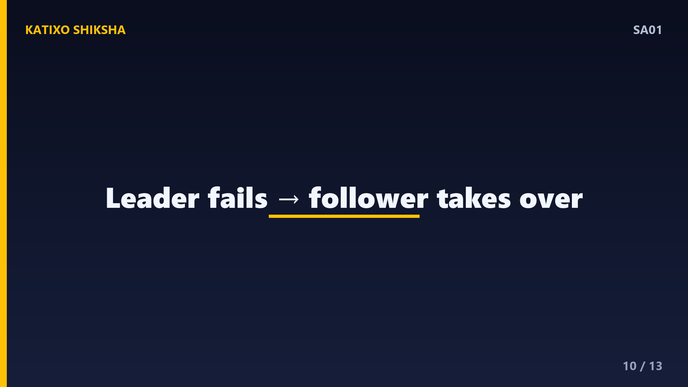
Slide 10अब reliability की बात। Kafka हर partition की copies बनाकर रखता है अलग brokers पर, जिसे replication कहते हैं। एक copy leader होती है जो read-write संभालती है, बाकी followers उसे copy करती रहती हैं। अगर leader broker गिर जाए, तो एक follower तुरंत नया leader बन जाता है और काम चलता रहता है। इसी को fault tolerance कहते हैं। पुराने Kafka में coordination के लिए ZooKeeper होता था, पर नए versions में KRaft mode इसे खुद संभाल लेता है।
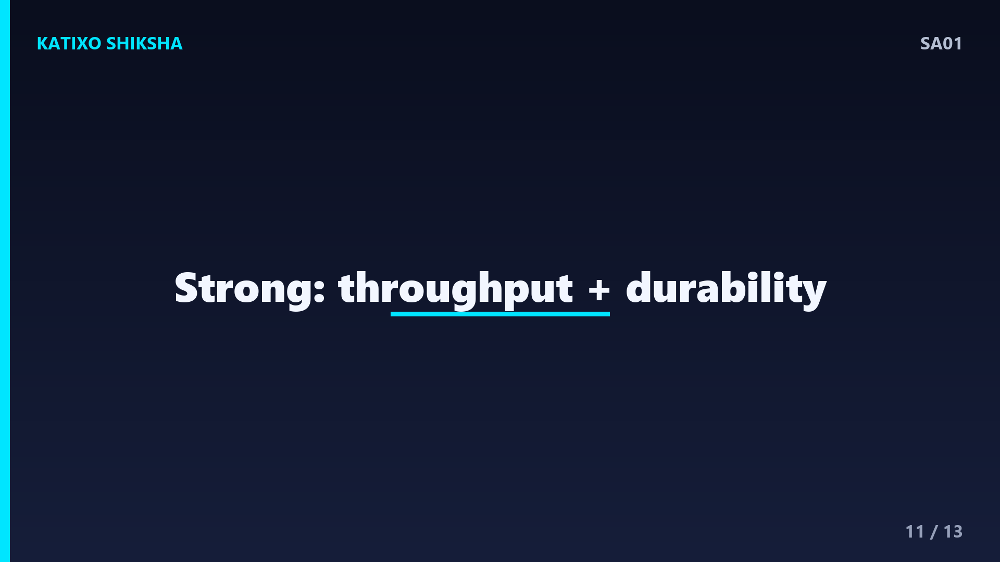
Slide 11अब interview के लिए सबसे ज़रूरी सवाल — Kafka कब use करें? जब आपको high-throughput data चाहिए, real-time streaming, log aggregation, या जब बहुत सारी services को एक ही event चाहिए। पर ये हर जगह सही नहीं। अगर आपको सिर्फ़ simple task queue चाहिए, या तुरंत request-reply वाला communication, तो RabbitMQ या एक simple API बेहतर हो सकती है। Interview tip — हमेशा बताइए कि Kafka throughput और durability में strong है, पर इसका setup और operational complexity ज़्यादा है।
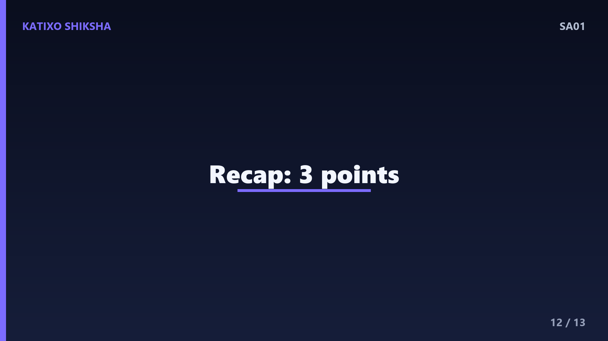
Slide 12तो चलिए एक quick recap कर लेते हैं, तीन points में। पहला — Kafka एक distributed event streaming platform है जो producers और consumers को decouple करके asynchronous, reliable communication देता है। दूसरा — इसका core है topics, partitions, offsets, और consumer groups, जो मिलकर इसे scalable और fault-tolerant बनाते हैं। तीसरा — Kafka high-throughput, real-time और replayable data के लिए perfect है, पर simple use cases के लिए शायद overkill.
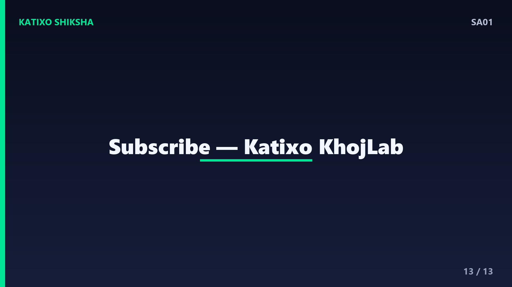
Slide 13तो दोस्तों, आज आपने देखा कि Kafka कोई जादू नहीं, बल्कि एक बेहद powerful और logical system है, जो आज की हर बड़ी company की backbone बना हुआ है। अगर आप system design interview की तैयारी कर रहे हैं, तो Kafka के ये concepts — brokers, partitions, और consumer groups — आपकी fingertips पर होने चाहिए। एक बार खुद एक छोटा topic बनाकर producer-consumer try करें, सब clear हो जाएगा। Aisi aur system design videos ke liye Katixo KhojLab subscribe karein! मिलते हैं अगली episode में।